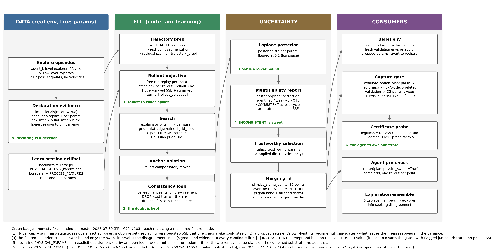
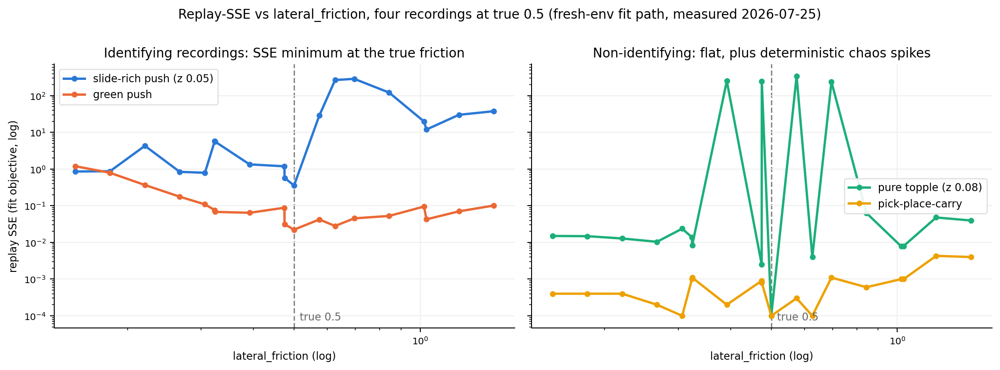

<!doctype html>
<html lang="en">
<head>
<meta charset="utf-8">
<title>Physical System Identification: Pipeline and Honesty Stack</title>
<meta name="viewport" content="width=device-width, initial-scale=1.0">
<link rel="stylesheet" href="https://cdn.jsdelivr.net/npm/reveal.js@4.6.1/dist/reveal.css">
<link rel="stylesheet" href="https://cdn.jsdelivr.net/npm/reveal.js@4.6.1/dist/theme/white.css">
<link rel="stylesheet" href="https://cdn.jsdelivr.net/npm/reveal.js@4.6.1/plugin/highlight/monokai.css">
<style>
  .reveal { font-size: 28px; }
  .reveal h1 { font-size: 1.5em; }
  .reveal h2 { font-size: 1.1em; margin-bottom: 0.55em; }
  .reveal ul { font-size: 0.8em; line-height: 1.42; display: block; }
  .reveal ol { font-size: 0.8em; line-height: 1.42; display: block; }
  .reveal li { margin: 0.26em 0; }
  .reveal table { font-size: 0.62em; margin: 0 auto; }
  .reveal table th, .reveal table td { padding: 0.28em 0.6em; }
  .reveal .small { font-size: 0.58em; color: #555; }
  .reveal .good { color: #1a7a1a; }
  .reveal .bad { color: #a01515; }
  .reveal .hl { color: #b3541e; font-weight: 600; }
  .reveal img { max-height: 520px; }
  .reveal pre { font-size: 0.52em; width: 96%; line-height: 1.3; box-shadow: none; border: 1px solid #ddd; }
  .reveal pre code { max-height: 520px; padding: 0.6em; }
  .reveal code { color: #2a5d8a; }
  .reveal p { font-size: 0.8em; }
</style>
</head>
<body>
<div class="reveal"><div class="slides">

<!-- ======================================================================
  Slides are Markdown inside the script block below, separated by a blank
  line, a line of three dashes, a blank line. "Note:" lines are speaker
  notes (press S). Figures live in docs/sysid/ and are referenced from
  this directory as ../sysid/*.png, regenerated by the make_*_fig.py
  scripts next to them.
======================================================================= -->

<section data-markdown data-separator="^\r?\n---\r?\n$" data-separator-notes="^Note:">
<script type="text/template">
# Physical System Identification

Pipeline, measured failure modes, and the honesty stack

`predicators/code_sim_learning/` + `agent_sdk`, on `master` since 2026-07-30 (PRs #96-#103)<br>
Figures: `docs/sysid/sysid_pipeline.png`, `docs/sysid/sysid_landscapes.png`
<!-- .element: class="small" -->

Note: This deck explains how the agent identifies physical simulator parameters from its own interaction data, the failure modes measured in run_20260724_232411 and its neighbours, and the honesty stack that now stands on master. Every number is measured, from run logs or from replay experiments on those runs' exact configs.

---

## Why sysID exists here

- The mismatch benchmark: the planner's belief physics is deliberately wrong (`domino_high_friction_turn`: believed `lateral_friction` 0.1, world runs 0.5). The agent must **learn the correction from its own episodes** or its test plans fail.
- Test tasks are **k*-minimal**: generation places the feasibility boundary at the TRUE parameters, so a small belief error flips success. The benchmark punishes overconfident sysID by design.
- Two parameter kinds, one joint fit:
  - **Physical params** (`PHYSICAL_PARAMS`): real-env counterparts exist (friction, restitution, mass). Fitted, applied to the belief env, swept by the margin gate.
  - **Rule params**: internals of the agent's learned process rules. Fitted **jointly** (so rules cannot absorb physics error) but never swept - reality has no `cascade_reach_dist`.
- Gray blocks are their own agent-facing `block` type with a `block_*` parameter family, so block friction and mass are fittable independently of the dominoes'.

Note: The joint fit is one theta vector containing both kinds. Only the physical slice is pushed into PyBullet via apply_physical_param_overrides; the full dict goes to the rules. The block_* split landed with the heavy-turn task family in #101.

---

## The pipeline at a glance



Note: Four lanes. Data collection on the real env; the fit orchestration in code_sim_learning; uncertainty accounting; and the consumers. Green badges are the six honesty fixes, each replacing a measured failure mode; the legend names the driving run for each.

---

## Inputs: data and declaration

- **Data**: explore episodes (`agent_bilevel` explorer, 2 per cycle) recorded as `LowLevelTrajectory` - object poses once per control step (setpoints updated at 12 Hz; 20 physics substeps of 1/240 s each), **no velocities**. That single fact shapes the whole design: mid-motion states cannot be reconstructed, so everything anchors at rest.
- 2-4 episodes back a typical fit. The raw trajectories are **persisted** to `<run>/fit_data/` per cycle-level fit (`code_sim_learning_persist_fit_data`, #101), so a wrong fit can be replayed offline. Re-execution from logged plans cannot reproduce mid-episode replans or the warm-env recording context, which is exactly the channel under suspicion.
- **Declaration**: the agent's `simulator.py` artifact names what to fit:
  - `PHYSICAL_PARAMS`: `ParamSpec(name, init, lo, hi)`; the env registry stamps `scale="log"` where appropriate (friction spans decades - the fit runs in `z = log(theta)`).
  - `PROCESS_FEATURES`: which features per type the objective scores.
  - Optional process rules + their params (joined into the same theta).

Note: The registry stamping matters: an early linear-space fit hit the box endpoint 0.0114 for a true 0.1 because linspace over [0.01, 2] has no candidate near 0.1. Everything - grid, LM, prior, probe - now lives in fit space.

---

## Declaring a physical param is a decision

- The trap: an agent that never declares `PHYSICAL_PARAMS` gets no fit, so the belief keeps the wrong prior - and every downstream verdict is then computed at physics nobody believes. Two `al_margin` seeds hit this independently: one omitted the optional block, one refused it in reasoning built on a false premise. Both then induced a superstition ("zero toppled blues") from the opaque rejections that followed.
- The root cause is in the evidence, not the agent: **teacher-forced (per-step) residuals cannot rule a physical parameter in or out.** They predict each step from the RECORDED state, so compounding divergence - exactly how a wrong friction manifests - is invisible. Near-zero per-step residuals are compatible with rollouts hundreds of times worse than at the true value.
- Fix (#103): `sim.residuals(rollout=True)` is an **open-loop** report - free-running replay per recorded trajectory. `sweep_params=[...]` (or `'all'`) opts into a sweep of each named registry parameter across its box, and `phys_params={name: value}` scores one hypothesized point (opt-in since 2026-08-05: the always-on full sweep cost registry x points x segments, and segments grow every cycle; the bare report now ends by listing the registry and nudging toward the sweep). The synthesis prompt demands sweep evidence in either direction: declare a param whose sweep is materially better away from the baseline; a **flat sweep is the honest reason to omit** one. Omission is never justified by small per-step residuals.

Note: This is the design fix for the capture-gate trap. The agent is also told the consequence of omission: undeclared parameters keep their built-in values in every base-sim rollout, including the evaluator's verification replay that decides what counts as a solve.

---

## Trajectory prep (`trajectory_prep.py`)

- **Settled-tail truncation**: cut each recording after the last observed motion plus a margin. A free-running replay diverges chaotically over hundreds of contact steps; re-scoring a long static tail only accumulates that divergence (measured: SSE at the TRUE friction exceeded SSE at a wrong one on full 500-step recordings).
- **Rest-point segmentation** = multiple shooting, anchored where it is exact: split at states where all scored features are quiescent, re-anchor each segment at its observed rest state. Bounds chaos compounding; lets trimming drop one chaotic phase without losing the clean cascade next to it. (Rest anchors only, because no velocities.)
- **Residual scaling**: wrap angular features to [-pi, pi], normalize every feature by its observed motion span (floored). Without this, roll/yaw once carried 83% of the SSE as pure representation artifacts (a settled domino at roll -pi vs +pi read as (2 pi)^2 per step).

Note: One scaling object per fit - every SSE, RMS and threshold below shares it, or the numbers are incomparable.

---

## The forward objective (`rollout_env.py`, `rollout_objective.py`)

- Per candidate theta: **free-run replay** - reset a sim to the segment's rest state, zero velocities, apply the physical overrides, step the recorded actions, score every step's scored features against the recording.
- **Fresh env per rollout.** State-level resets on a shared env leave history (reconstruction-diff skips, auxiliary joints, solver internals that survive `restoreState`): same-theta SSE once alternated 0.15 / 78, corrupting the grid and flooring the identifiability probe. Fresh worlds make every evaluation deterministic (+0.15 s each).
- Teacher-forcing (reset to each observed state, predict one step) is used for slow process features but is **blind to physical params**, for the reason on the previous slide.

Note: The env factory pattern is what makes the whole fit a pure function of its inputs, which in turn is what makes the orchestrator's fit cache sound and the agent's sim.residuals(rollout=True) view meaningful.

---

## What per-step SSE does to you (measured)



- Slide-rich motion identifies friction; pure topples are flat with **deterministic chaos spikes** (SSE 0.0025 at theta 0.4743, 248.7 at 0.4746 - the replay diverges qualitatively at one grid candidate); carry motion says nothing.
<!-- .element: class="small" -->

Note: Four recordings executed at true 0.5 and scored through the actual fit path. This is the core measured fact behind both the robust objective and the stage-2 calibration-probe idea: WHERE the signal lives is the sliding regime, and the chaos spikes are what a fragile objective lets steer the fit.

---

## Robust objective (#101)

- **Huber cap per residual**: transform `r -> r'` with `r'^2 = huber(r)`, so the SSE, the LM least-squares vector and every RMS threshold share ONE robust objective. A diverged replay still counts against a theta, linearly instead of quadratically - one spike can no longer outvote every clean observation. (`code_sim_learning_rollout_huber_delta = 1.0`)
- **Summary-statistic residuals** per segment, weighted by `code_sim_learning_rollout_summary_weight = 5.0`:
  - the **settled endpoint** features - the rest poses plans actually depend on, re-emphasized from 1-of-N steps to a first-class term;
  - per-object **motion onset** steps (first scored-feature deviation beyond the settle tolerance, normalized by horizon) - event timing is smooth in theta where mid-flight paths are chaos.
- Offline A/B on re-executed run episodes: summary terms separate the true friction from the neighbouring grid point by ~21x, vs ~1.25x for per-step SSE.

Note: This is the ABC / simulation-based-inference move: fit statistics chosen so the parameter enters smoothly. The per-step term is kept for quasi-static motion and as regularization.

---

## Search (`grid_seed.py`, `lm.py`, `physical_sysid.py`)

1. **Explainability trimming**: per segment, best achievable RMS over a candidate grid (judged against its OWN best params, never a pooled fit). Segments no parameters can explain are chaos; dropped before the fit sees them.
2. **Grid seed**: coordinate sweep per physical param, geomspace in fit space, flat-tolerance winner, then flat-edge refinement toward the anchor (a flat SSE plateau is reported as an interval, not fake certainty).
3. **Joint LM MAP** in fit space with the Gaussian prior folded into the residuals (data-flat directions stay at their anchors instead of drifting on rollout noise); coarse finite-difference step because contact residuals are flat under 1e-8 perturbations.
4. **Anchor ablation**: a refit with a param pinned at its registry baseline that is data-equivalent means the fitted move was compensatory - reverted.

In practice the LM step barely moves theta: **the grid decides**, which is why landscape quality (previous two slides) is everything.
<!-- .element: class="hl" -->

Note: All runs in the 232411 batch show LM deltas of +-0.000 to 0.005. The grid winner IS the fit.

---

## Consistency loop: keep the point, keep the doubt

- Invariant: every surviving segment must fit the FINAL params nearly as well as its own best. On violation, the survivor with the worst own-best RMS is dropped and the fit reruns (evidence: a chaotic shove accidentally explainable at friction ~1.34 was outvoting a clean topple's ~0.1).
- **The failure this hid** (seed1, run_232411): all four fits dropped the cascade tail of the SOLVED trajectory - the most truth-informative segment - and refit on the remaining motion to `1.0358` (true 0.5), declared identified at the sigma floor.
- **Fix** (#101): the drop still anchors the *point estimate*, but the pre-drop joint fit and the dropped segment's own-best grid values are recorded as `candidate_values` on the report. What the drop removes from the mean **reappears in the variance**.

Note: The drop heuristic is genuinely two-sided: sometimes the high-best-RMS segment is the chaotic one (drop is right), sometimes it is the informative one (seed1). Routing the disagreement into the hull makes the gate safe under both.

---

## Uncertainty accounting (`identifiability.py`)

- Posterior width per param, in preference order: MCMC marginals; the **grid landscape interval** (data-equivalent flat set widened to the nearest rejected evaluations); the **noise-aware curvature probe** (same-theta noise floor subtracted before curvature counts).
- Widths are floored at `code_sim_learning_rollout_min_posterior_width = 0.1` (log space): local precision is not accuracy. The floor is a **lower bound only** - what actually gets swept is the hull two slides on.
- Verdicts drive what gets applied:

| Verdict | Applied value |
|---|---|
| IDENTIFIED / WEAKLY | fitted value |
| NOT_IDENTIFIED / INSENSITIVE / UNKNOWN | registry anchor (or declared init) |
| AT_BOUND | anchor (optimizer hit the wall) |
| ANCHORED | anchor (move was compensatory) |
| INCONSISTENT | last **trusted** cycle value, hull swept |

Note: "identified" on fewer than 2 explainable segments is downgraded to weakly identified - one clean recording can be arbitrarily sharp and still biased.

---

## Cross-cycle consistency and arbitration

- Successive cycle-level fits are compared in fit space; a jump above `code_sim_learning_rollout_cross_cycle_sigma = 3` combined sigmas flags **INCONSISTENT** (observed: 0.3236 to 0.6267 = 4.7 sigmas, proof that the floored posterior was ~5x overconfident).
- Fixed in #101: the hold references the **cycle-level applied snapshot** (the old "hold the currently-applied value" held the very fit it refused, because the agent's in-session `sim.fit` had already applied it); both incompatible fits become hull candidates; and a rejected fit waits as **pending** until an independent later cycle refits within its band.
- New in #103, **pooled-evidence arbitration**: successive cycle fits are not independent equals - the later one minimized the objective over a superset of the data. So before holding, the flagged jump is scored with the fit's own SSE-at-theta probe over its surviving segments. If the held value explains that data at least `code_sim_learning_rollout_consistency_sse_ratio = 3.0` times worse, the jump is accepted immediately.
- Driver: run_20260727_210827 seed1 held a sharp but biased 2-trajectory cycle-0 fit (0.9313, true 0.5) over the 4-trajectory refit (0.4748) for the rest of the run - pooled SSE 4.4 vs 0.14.

Note: History records only cycle-level fits, never in-session tool fits, whose param sets churn. The pooled SSE is deliberately the survivor-set objective and not a full-set SSE: trimmed segments would add the same large error to both candidates and dilute the ratio.

---

## Consumers of the fit

- **Belief env**: applied physical params go into the planning base env (fresh validation envs re-apply them; params dropped from a later declaration revert to registry defaults).
- **Physics-margin sweep**: `physics_sigma_points` builds a 32-point grid over the **disagreement hull** - the union of the +-1 sigma band and every hull candidate. Consumed by:
  - the **capture gate** (`evaluate_option_plan`): strict parse, legitimacy, 3x/6x decorrelated-seed validation rollouts, then the margin grid; any failing point = `PARAM-SENSITIVE`, plan refused;
  - the agent's **pre-check**: `sim.run(plan, physics_sweep=True)` runs the same points, one deterministic rollout each, before submitting.
- **Exploration**: a 6-member Laplace ensemble feeds the info-seeking explorer; the fit's weak spots (unexplainable segments, unidentified params, hull disagreement, cross-cycle conflicts) are phrased as experiment objectives for the next explore phase.
- The gate is opt-in (`agent_plan_validation_physics_margin`, default False); the `agent_po_predicate_invention_al_margin` arm turns it on.

Note: Success is non-monotonic in the params near a feasibility boundary, which is why the sweep is a dense grid and not two endpoints: replaying run_140531's capture mapped a hazard band [~0.494, 0.511] holding ~30% failures at ~0.001 grain, where a 16-point grid's two in-band points both passed and the 32-point grid's 0.5046 fails.

---

## Whose physics does the gate test?

- The certificate that decides "is this a legitimate solve" replays the plan in a mirrored physics probe. It used to replay on the **base sim only**, at whatever the belief happened to hold - so a run without sysID had its plans judged at the stale prior (friction 0.1), where the design that works in reality (0.5) fails. The agent saw only opaque rejections.
- Fix (#103): the probe replays on the **combined substrate** - base sim plus the agent's learned process rules - via `BaseEnv.probe_process_model_factory`. Each probe attempt gets a fresh stepper (threading a fresh latent for recurrent rules) and reads the live fitted-params dict, so an in-session `sim.fit` reaches the probe the same way it reaches the planner.
- The real-env evaluator is untouched. Base-only stays as a load-bearing diagnostic: it answers "does this work in raw physics", a different question from "does this work in the world model the plan was authored against".
- Known limitation: process features the env cannot round-trip through `_set_state` (hidden-derived quantities) are not restored inside the probe replay. No env with a physics-replaying certificate declares one today.

Note: The principle: a verdict must be computed on the same substrate the plan was authored against, otherwise a rejection carries no information the agent can act on. That is precisely what produced the false "zero toppled blues" rule.

---

## Case study: run_20260724_232411 (the diagnosis)

| seed | fit | gate | real eval |
|---|---|---|---|
| 0 | 0.5033 | passed | **1/1 solved** |
| 1 | 1.0358 (7.3 sigma high) | 32/32 around the wrong center | 0/1, purple never toppled |
| 2 | 0.3236, then 0.6267 | cycle 2: INCONSISTENT **disarmed** the gate | 0/1 twice |

- Same env, same tasks: pure estimator variance. Re-executed cleanly, every seed's own explore plans recover ~0.5 even under the OLD objective - the corruption channel is the recording context (mid-episode replans, warm-env micro-state), not the data content.
- Counterfactuals, measured: seed1's hull [0.274, 1.036] contains the truth (an inflated sigma centered on the survivors, [0.533, 2.013], does not); the captured plan fails at every friction up to 0.6267, so the hull sweep refuses it; friction-robust k=3 designs exist (8/8 across the whole hull) at a cost of one extra blue.

Note: This run is where four of the six badges on the pipeline diagram were observed. Seed0 doubles as the positive control: when the center is right, the whole stack works.

---

## Where it stands now (2026-07-29 batch)

- 4 launches x 3 seeds = **12 runs** of the `al_margin` arm on `domino_high_friction_turn` (true `lateral_friction` 0.5), all carrying the stage-1 fixes and the combined-substrate probe; the two later launches also carry the solve-prompt strategy blocks and the exact reward disclosure.
- <span class="good">All 12 runs recorded a 1/1 test evaluation</span>, reward 0.70 to 0.90, median 0.80 (10 ran to completion; 2 were interrupted by an API outage after testing). The friction applied to the belief env ranged 0.38 to 0.77 across runs.
- The gate is load-bearing, not decoration: **19 PARAM-SENSITIVE refusals** across the batch, 15 of them in the one seed whose fit sat at 0.766. It kept refusing until the design carried margin, and that design then solved at the true 0.5 (reward 0.80).
- Honest reading of that seed: its swept hull was [0.693, 0.846], which does **not** contain 0.5. The gate bought design margin, not coverage - and margin was enough here.

Note: This batch replaces the 232411 scoreboard as the current state of the benchmark. It is not a clean A/B (prompt changes rode along in the later two launches), so the honest claim is joint: with the honesty stack on, every seed captured a plan that transferred, including one whose point estimate was 53% high.

---

## Honest limits

- The margin grid is a **probabilistic** detector: speckle finer than grid resolution can slip through (~85-90% detection for the measured hazard stats at 32 points).
- The hull covers *observed* disagreement. A fit can still be wrong in ways the data never reveals - the 0.766 seed above is exactly that case, and it survived on design margin rather than on the sweep covering the truth.
- Honesty is priced in blues: a hull-robust design may need k+1 dominoes (reward 0.70 vs 0.80). A captured 0.70 that works beats a captured 0.80 that scores -0.10.
- Rule params are never swept: they have no real-env counterpart. Their error surfaces through execution monitoring and refinement failures instead.

Note: The energy-margin alternative (mechanical margin per contact) was considered and rejected as not domain-general - it needs per-mechanism calibration.

---

## Next

- **Calibration probes in exploration** (stage 2, not built): the left landscape panel is the pitch - one slide-rich push identifies friction. Prompt-level guidance ("spend an early episode exciting each declared param in its smooth regime") plus identifiability-driven allocation: a NOT-identified / INCONSISTENT / wide-hull param earns a dedicated calibration episode next cycle.
- **ASID-style objective**: score candidate explore plans by trajectory disagreement across the Laplace ensemble (the infrastructure already exists).
- **Heavy-turn family E2E**: the displaced-corner dogleg tasks and the `block_*` parameter family landed in #101; first agent runs against them at true friction are the next benchmark step.
- **Longer-term**: record body velocities at recording time to unlock short-window multiple shooting - the standard cure for chaotic system ID, currently impossible because states carry poses only.

Note: Stage 2 was deliberately deferred so the stage-1 batch above attributes improvement to the estimator and the gate rather than to a new exploration policy.

---

## Pointers

| Piece | Where |
|---|---|
| Orchestration (single flow + fit cache) | `code_sim_learning/orchestrator.py` |
| Prep: truncation, segmentation, scaling | `code_sim_learning/trajectory_prep.py` |
| Objective: replay, Huber, summaries | `code_sim_learning/rollout_objective.py`, `rollout_env.py` |
| Search: grids, LM, ablation, consistency | `code_sim_learning/grid_seed.py`, `lm.py`, `physical_sysid.py` |
| Verdicts, trust selection, hull + margin points | `code_sim_learning/identifiability.py` |
| Cycle loop, persistence, arbitration, probe factory | `approaches/agent_sim_learning_approach.py` |
| Capture gate: policy / handler | `agent_sdk/tools/capture.py`, `agent_sdk/tools/testing.py` |
| Agent-facing probe (`sim.fit`, `sim.residuals`, `sim.run`) | `agent_sdk/belief_probe.py` |

Regenerate the figures: `PYTHONPATH=. python docs/sysid/make_sysid_pipeline_fig.py` (and `make_sysid_landscape_fig.py`).
<!-- .element: class="small" -->

</script>
</section>

</div></div>
<script src="https://cdn.jsdelivr.net/npm/reveal.js@4.6.1/dist/reveal.js"></script>
<script src="https://cdn.jsdelivr.net/npm/reveal.js@4.6.1/plugin/markdown/markdown.js"></script>
<script src="https://cdn.jsdelivr.net/npm/reveal.js@4.6.1/plugin/notes/notes.js"></script>
<script src="https://cdn.jsdelivr.net/npm/reveal.js@4.6.1/plugin/highlight/highlight.js"></script>
<script>
  Reveal.initialize({
    hash: true,
    slideNumber: true,
    width: 1280,
    height: 800,
    plugins: [RevealMarkdown, RevealNotes, RevealHighlight]
  });
</script>
</body>
</html>
